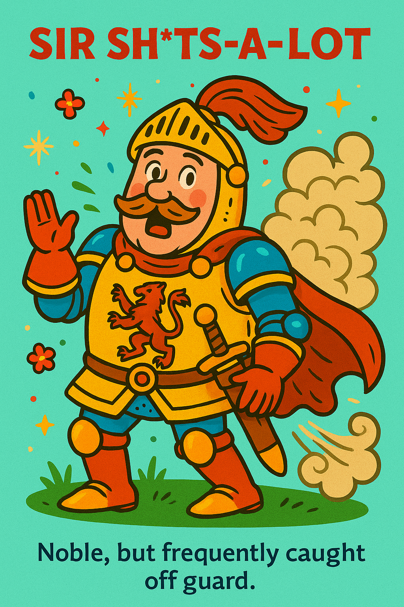
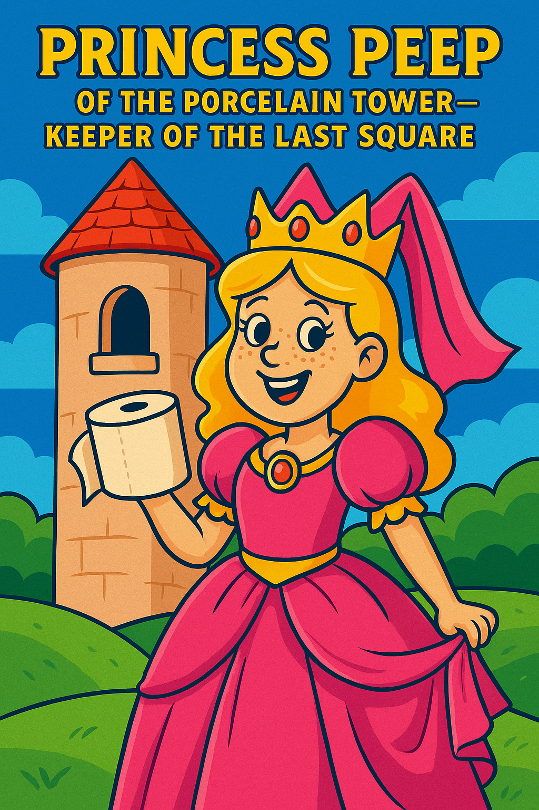
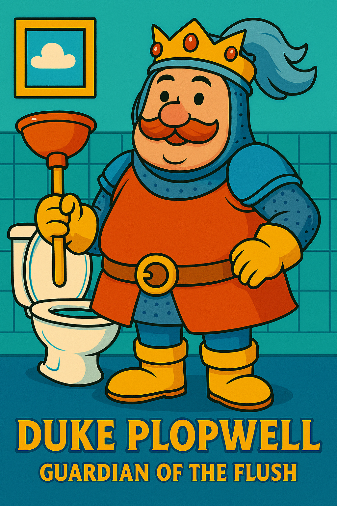
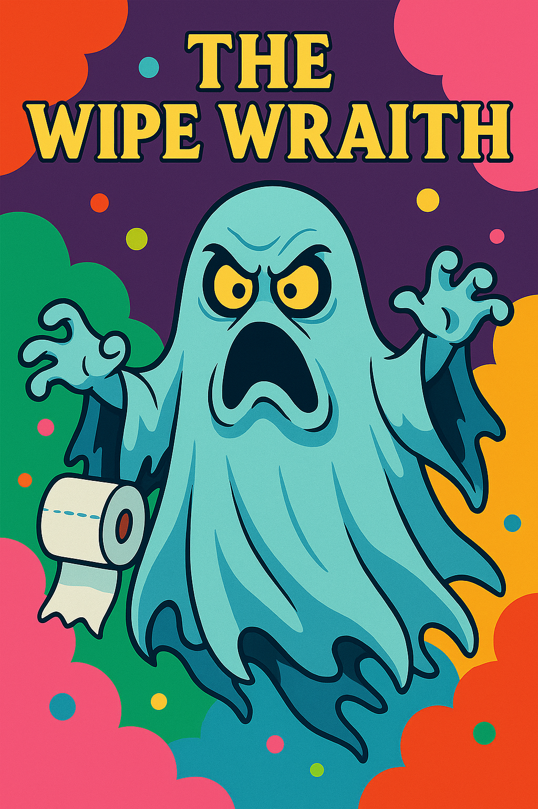
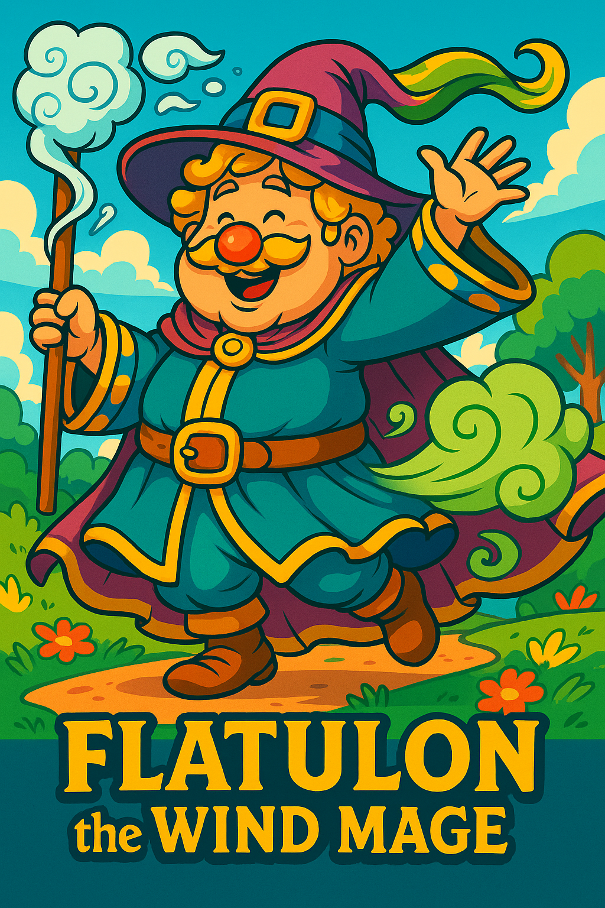

The Brown Knight Returns
A Tale of Honour, Haste, and Half a Roll
"He who squats in haste must wipe with wisdom."
🛡️ Characters

Sir Sh*ts-a-Lot — Noble, but frequently caught off guard. 🛡️ Sir Sh*ts-a-Lot
Once hailed as the cleanest lance in the loo, Sir Sh*ts-a-Lot now rides with a clenched gait and a thousand-yard stare. He’s noble, yes—but his timing is tragic, with surprise visits from destiny (and digestive regret) more frequent than mail. His war cry? “TOO LATE!” His armour rattles with the sound of premature consequence, and his faithful steed, Buttercup, has learned to flinch at the first gurgle.

Princess Peep of the Porcelain Tower — Keeper of the last square. 👸 Princess Peep of the Porcelain Tower
She guards the last square of toilet roll with the solemnity of a royal decree and the ferocity of someone who knows the pain of betrayal by a false “fully stocked” label. Her throne is high, her patience low, and her sceptre is a cardboard tube. Any who approach her chamber with damp eyes and clenched cheeks are met with the same response: “One ply or none—choose wisely.”

Duke Plopwell — Guardian of the Flush. 💦 Duke Plopwell
Duke Plopwell is the heroic custodian of the Flush Lever, whose mighty hand ensures that what enters the Bowl of Sorrows never returns. He speaks in gurgles, dreams in swirls, and bathes exclusively in scented blue toilet tank water. His enemies fear him, his friends adore him, and plumbers... invoice him. He once single-handedly unclogged the Cistern of Doom using only a spatula and a stern prayer.

The Wipe Wraith — A terrifying spirit who appears when the roll runs dry. 👻 The Wipe Wraith
Silent. Sinister. Slightly damp. The Wipe Wraith materialises only when it’s too late—when one stares into the empty cardboard abyss and hears the faint rustle of betrayal. Children fear the dark; adults fear this. She feeds on panic, wiping hope from the hearts of the desperate. Some say she can be banished with a wet wipe. Others have tried. They now walk funny.

Flatulon the Wind Mage — Cousin to Quick Jim, master of echoing halls. 🌬️ Flatulon the Wind Mage
Cousin to Quick Jim and banished from the Academy of Air Fresheners, Flatulon roams the land with a staff carved from the handle of an old bog brush. His spells echo through tiled chambers, shaking doors and friendships alike. A single gust can down a gryphon, extinguish birthday cakes, and force evacuations. He’s not evil—just gassy. And misunderstood. Mostly gassy.
📖 Plot Summary (abridged)
In the Kingdom of Gurglington, a dark prophecy echoes through the tiled halls:
"When the bellies churn and thunder roars,
The Brown Knight rides to settle scores."
Sir Sh*ts-a-Lot, armed with only a plunger and a half-used roll, must brave:
- The Valley of Unflushed Doom
- The Forbidden Stall with No Lock
- The Lavatory Labyrinth of Endless Waiting
Along the way, he learns about:
- Proper timing
- Respecting one's tum
- And why curry before battle is always a tactical error